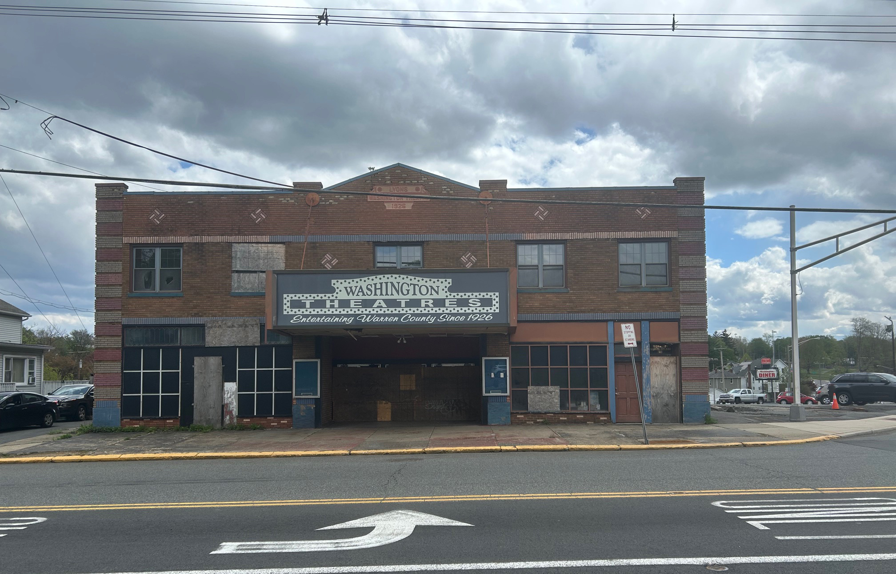
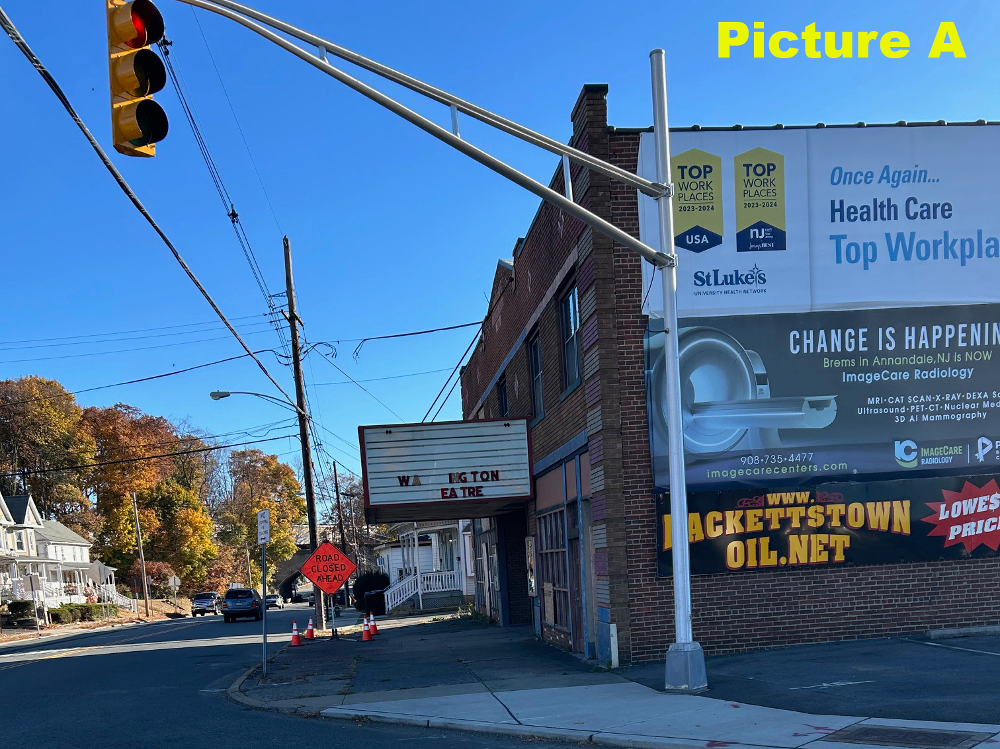
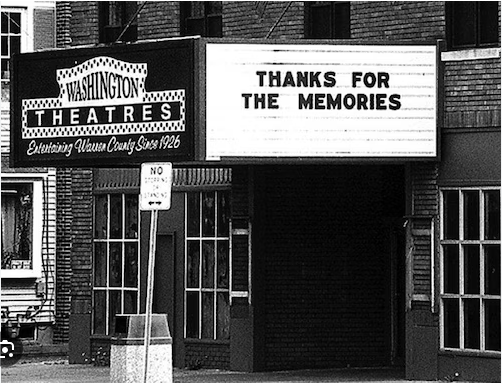

1926 - 2026!!


Fast-forward to 2026, and you can still trace the footprints of the past—Zimmerman’s on the left and Miers on the right. I like to imagine my great-grandfather picking up a new washing machine at Miers, then heading next door with his family and friends to catch a movie.


Even in 2026, you can still catch a glimpse of the Washington Theatre along Route 57 as it winds toward Hackettstown, New Jersey. (picture A)
A different angle of the Washington Theatre. Just hop on Route 57 here, and you’ll be in Phillipsburg, New Jersey in minutes. (picture B)
History still stands here in Washington, New Jersey. Check out the footprint.

A Brief History...
The Washington Theatre opened in 1926 as an 800-seat venue for vaudeville and silent films. Built under the Lions Theatre Circuit and celebrated as "The Showplace of Northwestern New Jersey," it originally featured a 3-manual, 2-rank Robert Morton Organ. The venue was upgraded for sound just four years after opening and has passed through multiple owners over the years.

In the 1970s, the theater was "twinned," which led to the loss or concealment of much of its ornate detail. Following years of decline, the Washington Theatre shut down in 1997. Yet it survived, briefly reopening thanks to the efforts of a dedicated local community group.

The Galaxy Theatres acquired the Washington Theatre in 1998, extensively renovating the lobby to its historic grandeur and refurbishing the auditoriums. However, the revival did not last, and the venue closed for good around 2001.

Though it made a comeback in May 2006, the theater shut down for good a decade later in 2016.